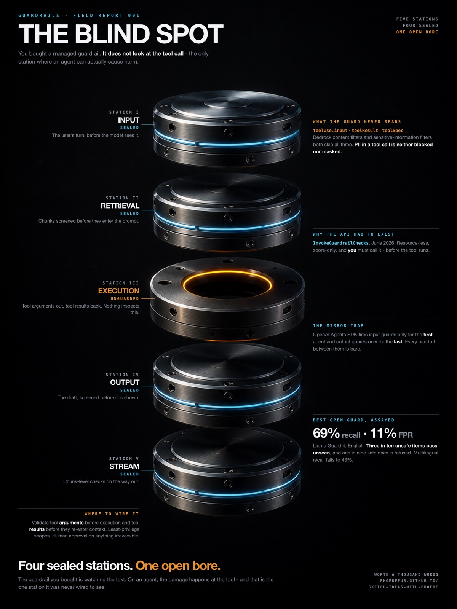

Style Vault / Bold / Dark Spec Poster
Dark Spec Poster
SV-038

My own work in this style: The Blind Spot
In plain words
A precision object lit like an expensive product photo against a true black void, with dense small monospace spec blocks running down the margins. One cold blue accent and one earned warm accent are the only colours. The style is the single dramatic object in darkness surrounded by technical fine print.
Topics it fits
- AI product launchthe flagship-product lighting on black makes a new tool feel engineered and premium
- Security and failure pointsone focal object in a void, with the warm accent on the flaw, sends the eye straight to the weak spot
- Keynote hero slidesa single lit object and margin specs give a big-screen moment that still carries real numbers
- Hardware and infrastructure hooksmachined metal under cinematic light turns servers or chips into something people stop scrolling for
Art style and layout
- core locked [near_black_ground, cinematic_product_render, one_signal_accent, dense_mono_spec_modules, absence_as_focal_point]
- near black ground SIGNATURE: a true near-black void (#07090C), no lifted greys, no ambient fill, no visible floor or horizon. The darkness is the material. A dark-grey ground reads cheap; commit to black
- cinematic product render SIGNATURE: the subject is a precision object shot like a flagship product hero - anodised aluminium, brushed titanium, machined concentric marks, chamfers, micro-screws. Direct the LENS and the LIGHTS in the prompt (100mm macro at f/8, one high softbox plus two rim strips, volumetric haze) or you get generic CGI
- one signal accent one cold accent carries the whole design (cyan #4FC3E8 = sealed / nominal), with a single hot exception that must EARN itself (amber #E8912F = breached). Two accents maximum. The hot one appears exactly where the argument is
- dense mono spec modules SIGNATURE: rule-topped modules of monospace smallcaps heads over tight sans body, ranged down the margins. Technical, information-dense, never centred. Metro-poster grammar
- absence as focal point the strongest use of this style: render the MISSING thing as a void and let the eye land on it. Labelling what is present as fine is weaker than drawing what is absent
- palette [void "#07090C, white "#F2F4F7, muted "#8A929C, cyan "#4FC3E8, cyan-hi "#5AD1F5, amber "#E8912F]
- typography display = tight grotesque (Helvetica Neue / system sans) at 700 weight, tracking -1.2 to -2.2px; spec heads = monospace smallcaps, letter-spaced 1.9px; body = 9.5-10.5px sans. Tabular figures for data
- composition subject in a narrow central vertical band occupying ~half the frame width. Type lives in the reserved margins: masthead top-left, station labels ranged right in the left column, spec modules in the right column, statement across the foot
- negative space generous and deliberate. In a dark poster empty black reads as cinematic, not unfinished. Do not fill it
- mood expensive, engineered, faintly accusatory
- era reference contemporary product-launch spec posters (transit-system technical posters, flagship consumer-hardware exploded views)
- character tunable - any concept expressible as a precision assembly
What must stay, what may change
Swap the object and the argument freely. Keep the true-black ground, the cinematic lens-and-light direction, one cold accent plus one earned hot accent, mono spec modules in the margins, and a single dominant focal point. If the ground lifts to grey or a second decorative hue appears, this style is gone.
As JSON
Paste this into a prompt or a skill to reuse the style.
{
"id": "SV-038",
"name": "Dark Spec Poster",
"audience": [
"bold"
],
"category": [
"graphic-design",
"photography",
"infographic"
],
"format": [
"poster",
"infographic",
"deck"
],
"maker": "hybrid",
"keep_and_swap": "Swap the object and the argument freely. Keep the true-black ground, the cinematic lens-and-light direction, one cold accent plus one earned hot accent, mono spec modules in the margins, and a single dominant focal point. If the ground lifts to grey or a second decorative hue appears, this style is gone.",
"style_dna": {
"core_locked": "[near_black_ground, cinematic_product_render, one_signal_accent, dense_mono_spec_modules, absence_as_focal_point]",
"near_black_ground": "SIGNATURE: a true near-black void (#07090C), no lifted greys, no ambient fill, no visible floor or horizon. The darkness is the material. A dark-grey ground reads cheap; commit to black",
"cinematic_product_render": "SIGNATURE: the subject is a precision object shot like a flagship product hero - anodised aluminium, brushed titanium, machined concentric marks, chamfers, micro-screws. Direct the LENS and the LIGHTS in the prompt (100mm macro at f/8, one high softbox plus two rim strips, volumetric haze) or you get generic CGI",
"one_signal_accent": "one cold accent carries the whole design (cyan #4FC3E8 = sealed / nominal), with a single hot exception that must EARN itself (amber #E8912F = breached). Two accents maximum. The hot one appears exactly where the argument is",
"dense_mono_spec_modules": "SIGNATURE: rule-topped modules of monospace smallcaps heads over tight sans body, ranged down the margins. Technical, information-dense, never centred. Metro-poster grammar",
"absence_as_focal_point": "the strongest use of this style: render the MISSING thing as a void and let the eye land on it. Labelling what is present as fine is weaker than drawing what is absent",
"palette": "[void \"#07090C, white \"#F2F4F7, muted \"#8A929C, cyan \"#4FC3E8, cyan-hi \"#5AD1F5, amber \"#E8912F]",
"typography": "display = tight grotesque (Helvetica Neue / system sans) at 700 weight, tracking -1.2 to -2.2px; spec heads = monospace smallcaps, letter-spaced 1.9px; body = 9.5-10.5px sans. Tabular figures for data",
"composition": "subject in a narrow central vertical band occupying ~half the frame width. Type lives in the reserved margins: masthead top-left, station labels ranged right in the left column, spec modules in the right column, statement across the foot",
"negative_space": "generous and deliberate. In a dark poster empty black reads as cinematic, not unfinished. Do not fill it",
"mood": "expensive, engineered, faintly accusatory",
"era_reference": "contemporary product-launch spec posters (transit-system technical posters, flagship consumer-hardware exploded views)",
"character": "tunable - any concept expressible as a precision assembly"
},
"palette_hex": [
"#07090c",
"#f2f4f7",
"#8a929c",
"#4fc3e8",
"#5ad1f5",
"#e8912f"
],
"topics": [
{
"topic": "AI product launch",
"why": "the flagship-product lighting on black makes a new tool feel engineered and premium"
},
{
"topic": "Security and failure points",
"why": "one focal object in a void, with the warm accent on the flaw, sends the eye straight to the weak spot"
},
{
"topic": "Keynote hero slides",
"why": "a single lit object and margin specs give a big-screen moment that still carries real numbers"
},
{
"topic": "Hardware and infrastructure hooks",
"why": "machined metal under cinematic light turns servers or chips into something people stop scrolling for"
}
]
}